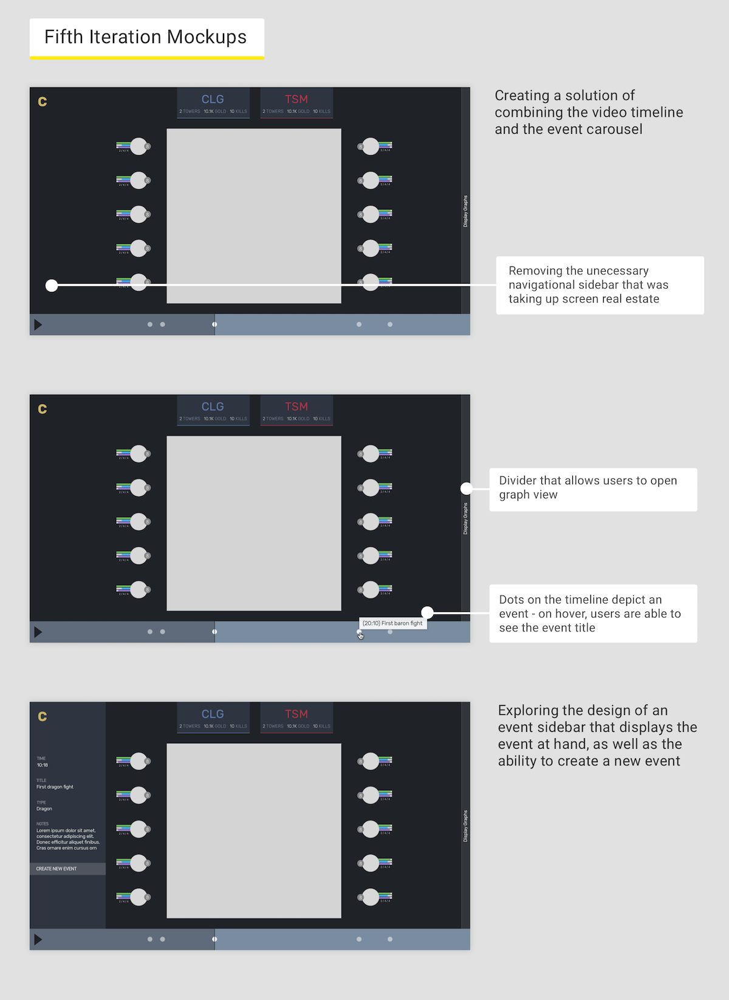

While developing this style guide, I kept in mind the importance of not only designing for the aesthetics, but also for functionality, consistency, and usability.
Consistency within the app is important, along with consistency with the League of Legends community. Picking a deep blue-gray base color relates the product to League of Legends. Gold allows users to associate a victorious color, and success, with using Climb. I chose to keep the palette relatively muted given the dashboard itself containing several other elements that draws color attention - the map, the champion icons, the player stats, etc. Staying neutral and muted reduces detracting the user's attention from the gameplay and performance.
When choosing fonts, I wanted to stick with rounded edged fonts, while maintaining readability. It was important to choose fonts that would be very easy to read on a dark background and at different sizes.
One of our first ideas was implementing a double collapsing menu. One menu leads to other parts of the app, and the secnod is a game detail menu of the current game being viewed. The basic elements necessary are a mini-map, video player timeline, stats of players on both sides, and the ability to add and view events.
Problems:
The double collapsing menu takes up a lot of screen real estate, thus forcing the mini-map smaller. Game details force the user to view the events vertically (from up to down), while the natural process of chronological events is left to right. In addition, having the existing events stacked on top of the "create new event" function creates a problem of possible forcing the "create new event" too far down. Users should not have to scroll to access a vital feature.
I spent some time exploring other options such as having tabbed menus rather than the double collapsing menu. This iteration was spent primarily on playing with colors.
Problems:
Lack of clarity on what the menus are, on top of all of the aforementioned problems from the first cycle.
This iteration was spent on fleshing out the design and developing the style guide. Colors for the two teams (red and blue side) are drawn from the original League of Legends interface. The background is made darker to allow the eye to focus on the mini-map. I try incorporating icons for more indentification on what each menu is.
Problems:
Use of sans-serif and serif fonts is confusing and distracting. I needed to figure out a way to better use the combination, or scrap it altogether. Most of the aforementioned problems are still not addressed in this cycle.
This iteration is really when I start tackling those original design problems. I explore a solution of having a tag carousel (or event carousel) of the events that have been created. This allows the users to follow the chronological events from left to right along with the video timeline. A more clarified system is designed for the team display on top - more readability for gold, kills, and towers.
Problems:
Having a carousel and a video timeline and the sidebar makes the entire app feel very cluttered. We want to make Climb as minimal as possible, and focus on the map and player display. The video timeline and the event carousel also feels excessively overlapping, since both display time-based information.

We got rid of the main menu sidebar altogether, leaving only the logo to have users return to the home page. The other big decision was to combine the event carousel and the video timeline. Events are displayed as circles, and users can hover over the events to view the tiel. This allows much more room for the mini-map.
Problems:
We need to explore how to display all of the notes taken for each particular game without having the user click on each individual event to view those notes. Perhaps there can be a fixed notes section built into the design.
I decided to go with version C, which provides the most clarity while still remaining simplistic.
There is still a lot of work being done and to be done. Immediate next design steps include building out different versions of the logo (someday that golden temporary C will be replaced by a real logo!), thinking about how to display graph view alongside the map view, exploring a fixed notes option, and researching better ways to allow the user to intake information, without having to view all the different data being displayed across the dashboard at all times.